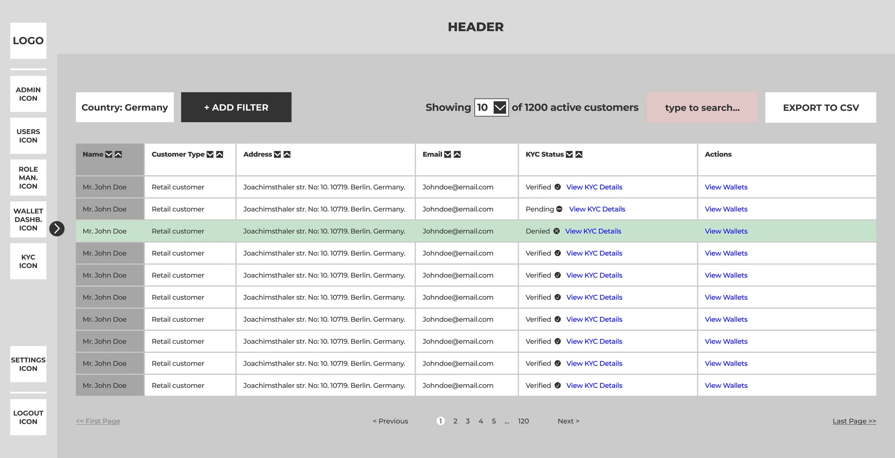

Additionally, none of the information, deliverables, or design decisions presented in this case study represent the views or opinions of Nyala.
Scope — Take-home exercise
Platforms — Web
Timeframe — September 2022
Links — Product website, Figma prototype
Nyala is a technology company specializing in blockchain technology and a pioneer of regulated custody solutions for crypto assets.
As part of my application to a product designer position at Paro, I was tasked with the following:
1. improving the user-friendliness and aesthetic appeal of a representative wireframe for a KYC module for their institutional (B2B) custody platform. I could create my own wireframe if I wished.
2. Identifying parts of the wireframe that did not make sense.
3. Identifying any missing or incomplete key functions in the KYC module.
1. Visual elements should be proportionate to their importance for the user. For example, if the user table is deemed to be the most important part of the KYC module for the majority of the user base, then most of the visual space should be allocated to it.
2. The KYC module's UI should be designed in a way that is familiar to the target audience of 40-60 year-old institutional investors who are already familiar with banking products and their interfaces.
3. As there is no user research provided, every design decision should be justified with a reason.
Considering...
1. According to design principle #1, as the content section is the part of the page that users will focus on the most, the side navigation bar should be much smaller.
2. The absence of a "Log Out" option weakens security, especially since this product is used to manage custodians' clients' assets.
Resulted in...
1. An increase of approximately 27% in both the width and height of the content section, leaving more room for white space and additional content.
2. Users are now able to direct their attention to the customer table with less distraction from other visual elements.
Before
After
My primary communication method
Let's connect on the world's largest professional network
My occasional writings reside in here
In case you need to set up a meeting asap
My code lives here